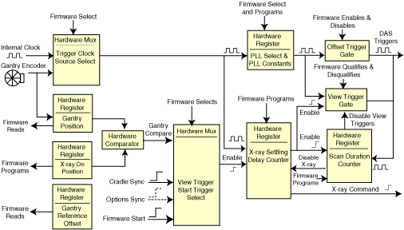

Operating Documentation
Direction 5114045-800, Rev# 10
LightSpeed 4.X Service Information (Advanced)
Operating Documentation |
The Axial II Control Board generates DAS triggers for all data collection modes. Refer to Illustration 1 and Table 1). The DAS trigger signal uses inputs from gantry encoder, table, and x-ray command circuitry to coordinate the DAS trigger signal with gantry and table motion. The DAS trigger function produces both offset triggers for DAS offset characterization and view triggers for actual scan data acquisition.
The trigger circuitry supports 4 scan modes: static, scout, axial, and helical. The modes and offset or view triggers output are selected by firmware. Firmware sets up the hardware by pre-programming the modes and parameters before the triggers are actually generated.
Scout and helical modes require a sync pulse from the table to coordinate the start of triggers. Scout scans use a fixed clock input reference to generate the triggers. Static mode also uses a fixed clock reference. Helical and axial use the gantry encoder signal as a reference to generate triggers.
Illustration 1: Triggers Block Diagram

The DAS trigger counter controls the duration of the scan by counting the number of DAS triggers generated by the ACB. When the programmed number of triggers is received, the zero triggers signal is asserted, causing exposure command to deactivate, trigger generation to deactivate and firmware to be interrupted by a maskable interrupt on VME IRQ4.
To allow for variable length scans, such as required by the CT Smartview option, four counters make up the DAS trigger counter circuit: pre-trigger, minimum triggers, maximum triggers and cycle triggers. Note that if the respective counter is programmed to zero, then the output is active. When the pre-trigger counter expires, the other counters begin counting. This allows for a fixed number of triggers to be generated outside of the control of the other counters. The minimum counter inhibits the zero trigger signal until at least a minimum number of triggers in addition to pre-triggers has been generated. The maximum counter asserts zero trig when the maximum number of triggers in addition to pre-triggers has been generated. The cycle counter, in conjunction with a bit programmable via the VME, can be used to force the system to collect an integer number of triggers in addition to pretriggers. The cycle counter allows for the acquisition of a variable number of “sectors” during scanning.
Speed control is achieved by using the Axial encoder input in two places: the STC and the AMD via the ACB. The AMD uses the encoder feedback to close its control loop and regulate speed. The STC uses the encoder feedback and compares it to the AT SPEED feedback from the AMD. The AMD status is polled every 25 msec. A speed fault will occur if 5 consecutive samples are out of tolerance. The speed regulation is ± 3% of commanded velocity.
Table 1: Scan Speeds, # of Views and Slipring Bandwidth
| SCAN SPEED (SEC) | VIEWS PER GANTRY ROTATION | SLIPRING BANDWIDTH (MBAUD) |
|---|---|---|
| Scout | Variable | Variable |
| 0.5 sec | 704 views | 118 Mbaud |
| 0.6 | 840 | 117 |
| 0.7 | 980 | 117 |
| 0.8 | 984 | 103 |
| 0.9 | 981 | 91 |
| 1.0 | 984 | 83 |
| 1.5 | 1968 | 83 |
| 2.0 | 1968 | 83 |
| 3.0 | 2952 | 83 |
| 4.0 | 3936 | 83 |